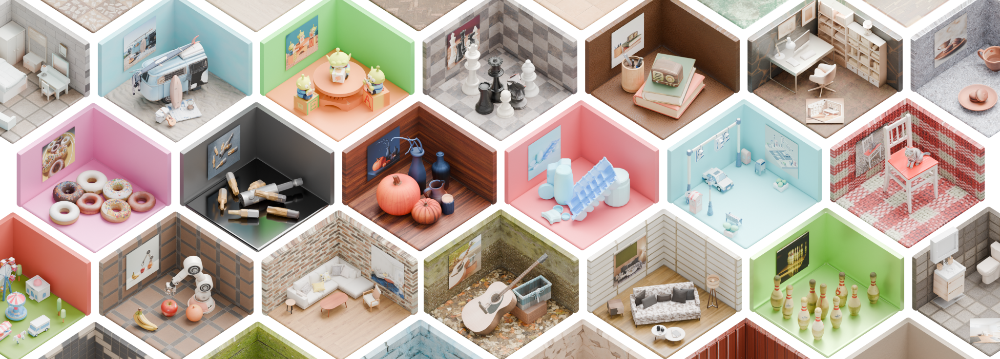
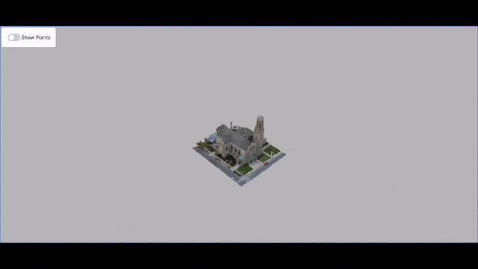
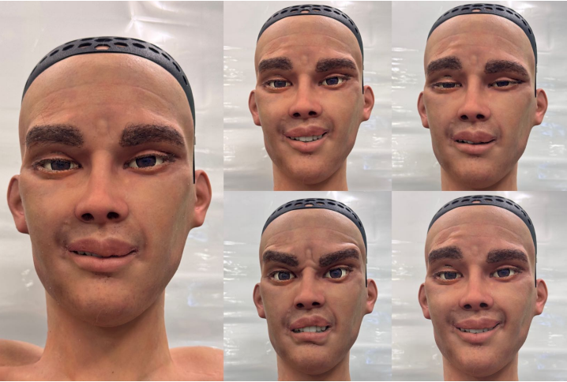
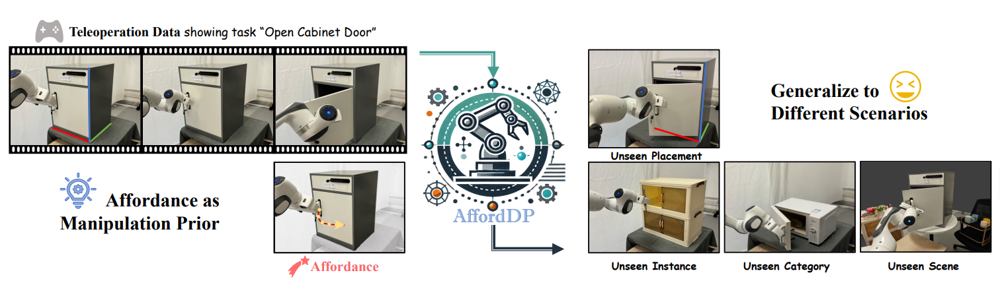

SEA Lab
Home
People
Research

CAST: Component-Aligned 3D Scene Reconstruction from an RGB Image
Kaixin Yao*, Longwen Zhang*, Xinhao Yan, Yan Zeng, Qixuan Zhang, Wei Yang, Lan Xu, Jiayuan Gu, Jingyi Yu
SIGGRAPH 2025 (Best Paper Award)
Webpage
|
arXiv

Point-SAM: Promptable 3D Segmentation Model for Point Clouds
Yuchen Zhou*, Jiayuan Gu*, Tung Yen Chiang, Fanbo Xiang, Hao Su
ICLR 2025
Webpage
|
arXiv
|
Code

ExFace: Expressive Facial Control for Humanoid Robots with Diffusion Transformers and Bootstrap Training
Dong Zhang*, Jingwei Peng*, Yuyang Jiao, Jiayuan Gu, Jingyi Yu, Jiahao Chen
IROS 2025
Webpage
|
arXiv

Afforddp: Generalizable diffusion policy with transferable affordance
Shijie Wu*, Yihang Zhu*, Yunao Huang, Kaizhen Zhu, Jiayuan Gu, Jingyi Yu, Ye Shi, Jingya Wang
CVPR 2025
Webpage
|
arXiv
|
Code